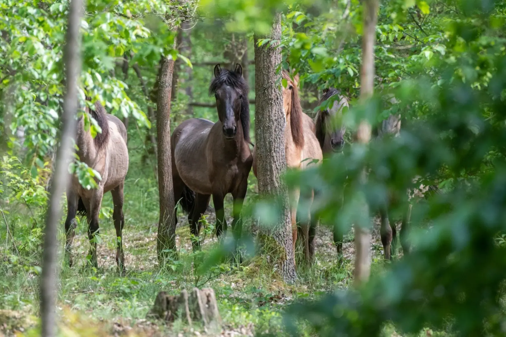

Kampinoski Park Narodowy to jedyny park narodowy w Polsce tak blisko dużej metropolii. Puszcza, bagna, łosie. Slow travel pod Warszawą.
Dlaczego warto
Kampinoski Park Narodowy to park, który powstał w 1959 r., żeby chronić Puszczę Kampinoską — jeden z najcenniejszych kompleksów leśnych w Polsce. Leży 30 km od centrum Warszawy, co czyni go jedynym parkiem narodowym w Polsce tak blisko dużej metropolii. Puszcza Kampinoska to nie tylko las — to mozaika ekosystemów: wydmy śródlądowe, bagna, łąki, olsy, bory sosnowe i grądy. W parku żyje ok. 200 łosi — to jedna z największych populacji w Polsce. Do tego bobry, wydry, dziki, sarny, a z ptaków — żurawie, bociany czarne, bieliki.
Slow travel po Kampinoskim Parku to podróż przez krajobraz, który zaskakuje różnorodnością. Park dzieli się na dwa główne pasy: pas wydm (na północy) i pas bagien (na południu), rozdzielone kanałem Łasicy. Warto spędzić tu 2–3 dni, żeby zobaczyć różne typy krajobrazu. Najlepiej zwiedzać park pieszo lub rowerem — jest tu ok. 360 km szlaków pieszych i 200 km szlaków rowerowych, a komunikacja z Warszawą jest doskonała (autobusy i pociągi).
Co zobaczyć
Kampinoski Park Narodowy dzieli się na trzy główne części: pas wydm (północ), pas bagien (południe) i centrum (okolice Palmir). Do zwiedzania parku potrzeba 2–3 dni.
Pas wydm
- Wydmy śródlądowe — unikatowy krajobraz, wydmy do 30 m wysokości. Warto dla widoków.
- Palmyra — osada w parku, z cmentarzem-mauzoleum z II wojny światowej. Warto dla historii.
- Truskaw — wieś przy parku, punkt startowy dla szlaków pieszych. Warto dla bazy.
Pas bagien
- Bagna Łasicy — najcenniejszy ekosystem parku, ostoja łosia i bobra. Warto dla przyrody.
- Kampinos — wieś z klasztorem i dawnym pałacem. Warto dla architektury.
- Wólka Węglowa — osada w parku, z leśniczówką i punktem widokowym. Warto dla widoków.
Centrum
- Izabelin — wieś przy parku, z siedzibą dyrekcji parku i muzeum. Warto dla informacji.
- Granica — wieś przy parku, punkt startowy dla szlaków. Warto dla bazy.
- Stare Babice — wieś przy parku, z dawnym kościołem. Warto dla architektury.
Kiedy jechać
- Kwiecień–maj — najlepszy czas dla ptaków i kwitnących łąk. Warto dla przyrody.
- Maj i czerwiec — najlepszy czas dla slow travel. Ciepło, zielono, mało turystów.
- Lipiec–sierpień — ciepło, ale tłoczno (park jest popularny wśród warszawiaków).
- Wrzesień–październik — drugi najlepszy okres. Kolory jesieni, mniej ludzi, grzybobranie.
- Listopad–marzec — park zimą jest dostępny, ale wiele szlaków jest błotnistych. Warto dla tych, którzy chcą ciszy.
Jak dotrzeć
- Samochodem: z Warszawy ~30 minut (DK7 lub S8), z Łodzi ~1,5 godziny (A2).
- Pociągiem: pociągi Kolei Mazowieckich z Warszawy do Truskawia, Kampinosu, Palmir. Warto dla dojazdu bez samochodu.
- Autobusem: linie ZTM i PKS z Warszawy do większości wsi przy parku.
Kampinoski Park najlepiej zwiedzać pieszo lub rowerem — park jest doskonale skomunikowany z Warszawą, a szlaki są dobrze oznakowane. Samochód warto zostawić na parkingu przy wjeździe do parku.
Ile czasu potrzebujesz
Weekend (2 dni) to minimum — Palmyra, bagna Łasicy, wydmy.
Trzy dni to realny czas na pierwszy wyjazd. Palmyra, bagna Łasicy, wydmy, Kampinos, Izabelin.
Tydzień pozwala poznać cały park — wszystkie szlaki piesze i rowerowe, z licznymi przystankami.
Co zjeść i gdzie spać
- Pstrąg z Łasicy — z lokalnych hodowli, dostępny w gospodach.
- Grzyby z puszczy — z lokalnych zbiorów, dostępne w sezonie.
- Sery kozie — z lokalnych hodowli, dostępne w sklepach wiejskich.
- Miod pitny — z pasiek kampinoskich.
Bazy noclegowe: Warszawa (miasto, więcej opcji), Izabelin (wieś, pensjonaty), Kampinos (wieś, pensjonaty), Truskaw (wieś, agroturystyki).
Praktyczne wskazówki
- Zwiedzanie z przewodnikiem — park ma bogatą faunę i florę, warto wziąć przewodnika.
- Łosie — w parku żyje ok. 200 łosie. Warto zachować ciszę i nie podchodzić zbyt blisko.
- Zakupy — kupujcie miód, sery i wędliny bezpośrednio od gospodarzy.
- Godziny otwarcia — niektóre ścieżki są zamykane w okresie lęgowym ptaków. Warto sprawdzić przed wyjazdem.
- Pogoda — pogoda w regionie bywa zmienna, nawet w lipcu warto mieć kurtkę.
- Zasięg — dobry w całym parku (bliskość Warszawy).